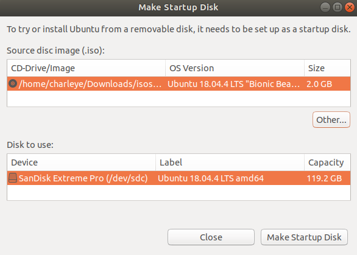
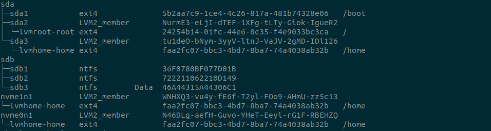
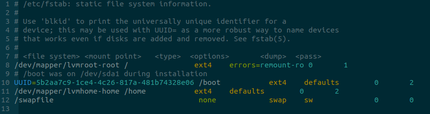
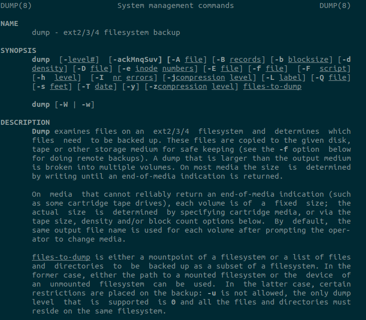
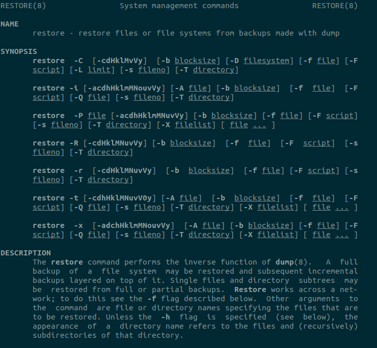

通常我们安装好ubuntu-18.04后都要花很长时间来配置使其更好地符合自己的使用习惯，但是当换新的设备或者硬盘后不可能再花很多时间重新配置一遍，这既浪费时间又没有意义的苦差事，因此通过系统备份还原能够快速地实现系统的迁移复制。
准备
必备硬件：一个至少4GiB的U盘用于，一个移动硬盘用于存放系统备份数据
先从官网Ubuntu 18.04.5 LTS (Bionic Beaver) 下载ubuntu-18.04.4-desktop-amd64.iso文件，然后用Startup Disk Creator工具制作一个Ubuntu启动盘，用于在系统还原时提供一个操作环境。也可以使用下列命令下载iso文件：
1 | wget https://releases.ubuntu.com/18.04.4/ubuntu-18.04.4-desktop-amd64.iso |
如下图所示用ubuntu-18.04.4-desktop-amd64.iso制作一个可启动U盘，点击Make Startup Disk按钮开始进行启动U盘的制作。

图1 制作启动U盘
下面安装备份还原使用的工具：1
2sudo apt-get install dump
sudo apt-get download dump
上面最后一个命令会下载dump_0.4b46-3_amd64.deb，需要将这个工具安装到使用U盘启动的Live操作系统。
系统备份
查看当前系统硬盘分区和文件系统：1
2
3
4
5
6
7lsblk -f
或
parted -l
或
fdisk -l
或
df -T

图2 当前的分区和文件系统信息
也可以打开/etc/fstab文件来验证分区和文件系统的信息

图2 fstab文件的内容

图3 dump命令介绍

图4 restore命令介绍
将根分区/、/home和/boot三个分区都备份：1
2
3sudo dump -0u -f /media/charleye/Material/filesystem-backup/root/2020-09-13/full-root-backup.20200913 /dev/mapper/lvmroot-root -z
sudo dump -0u -f /media/charleye/Material/filesystem-backup/home/2020-09-13/full-home-backup.20200913 /dev/mapper/lvmhome-home -z
sudo dump -0u -f /media/charleye/Material/filesystem-backup/boot/2020-09-13/full-boot-backup.20200913 /dev/sda1 -z
系统还原
在新设备上让BIOS从U盘启动引导进入Live Ubuntu-18.04操作系统，然后手动安装dump工具，然后根据备份时得到的设备分区信息对现在的新硬盘进行相同的分区并格式化。
1 | sudo dpkg -i dump_0.4b46-3_amd64.deb |
至此，重启之后就能够正常进入系统，说明系统迁移复制成功。